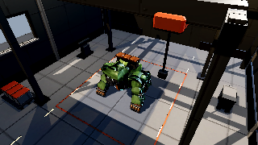
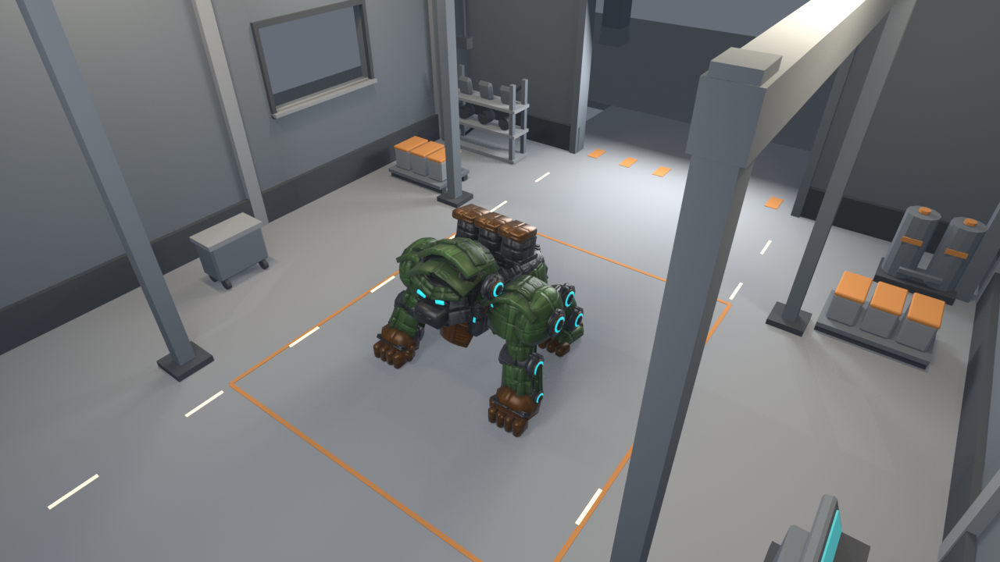
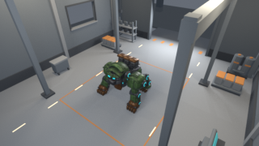
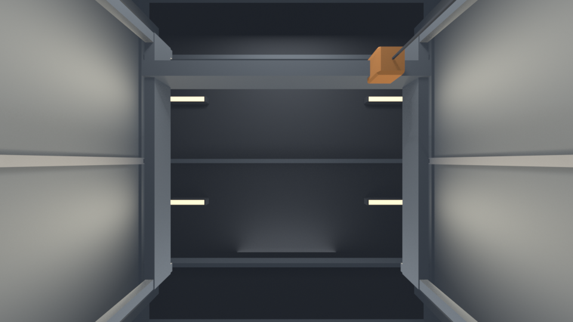
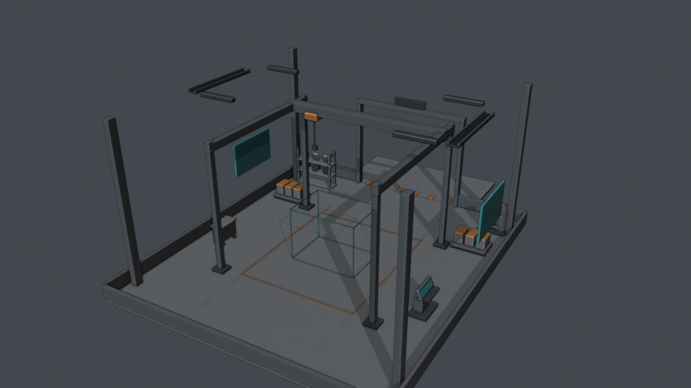
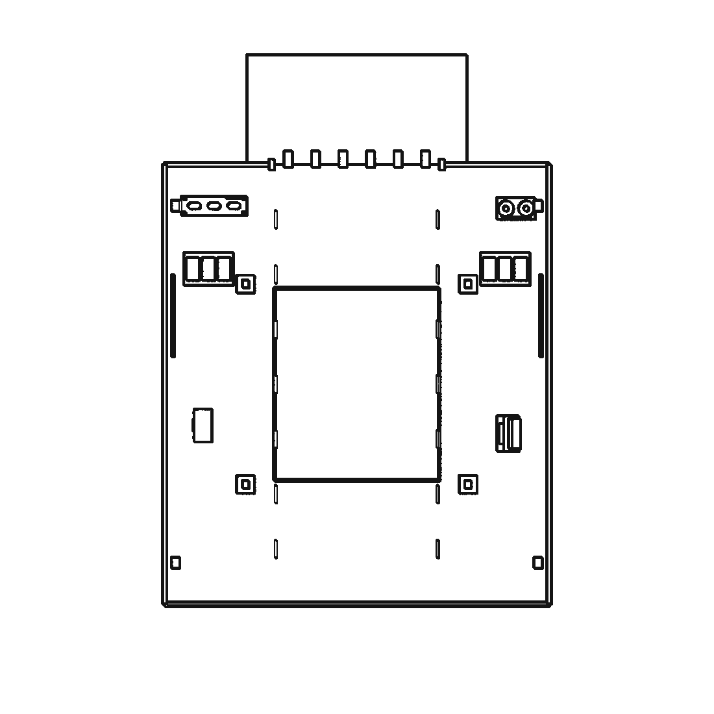
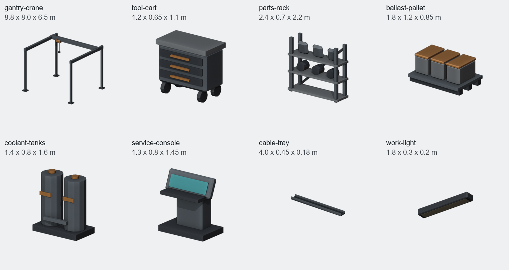
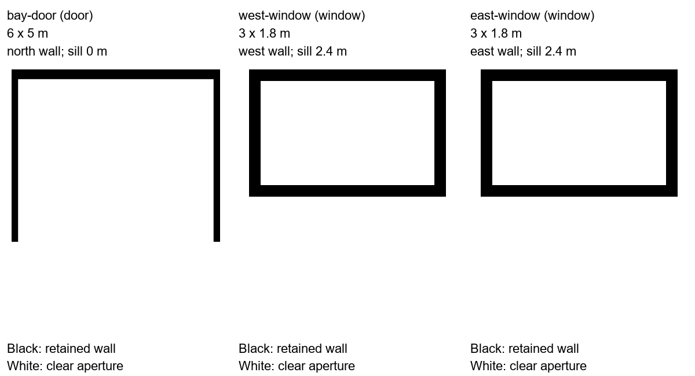

Hangar bay: Runtime review
Function and Form approved. Godot checks pass. Runtime approval pending.

Actual Godot capture at 320 x 180, enlarged with nearest filtering. The current machine plays its idle; room and machine use the same metal finish.
3,280 room triangles20,782 scene triangles / 40,0004.3 MB GLB100% crisp structural hard edges
Runtime checks
room_check: PASS; room, current machine, textures, finish and idle animation loaded.- Code-painted colour, baked ambient occlusion and emission atlases; nearest filtering; no generated textures.
- Camera inside the sealed shell. Zero room occlusions across 375 visible rest-pose machine samples.
- Floor top at the origin; measured rest-pose support gap 2 mm. All nine bay-door aperture rays clear toward Godot +Z.
- Four work lights derive from the authoring fixture manifest. The test-box fallback still passes.
The production camera moved slightly inward to clear the crane cable from the current machine's silhouette. The exported room is rotated to face its door toward Godot +Z; the machine is loaded separately. Runtime collision/navigation, full animation envelopes and handheld performance remain outside this display-stage review.
Lighting follows the Godot stage contract: baked contact shading plus real-time calibrated metal lighting. No static lightmap is used. The bundled web/Meshy validator remains incompatible with that native procedural route; its output is retained.
Godot check | Export geometry check | Export and texture hashes | Hard-edge probe | Plugin validator | Approval record
Approved Form evidence
Hangar bay: Form review
Form approved by Preston with 'next'. The following images preserve the authoring review.

Blender Form preview: room shape, prop placement, and machine scale. The machine is an immutable fit snapshot; its current revision and final metal finish will be checked in Godot.
Game resolution

320 x 180 authoring preview. The loaded game camera remains to be verified.
Room corners
Ceiling and supports

Center-up: flat fixtures against the ceiling underside, gantry below.
Openings and floor contact
Measured checks
- 18,656 preview triangles including the staged machine and exterior; below 40,000.
- Six manifold shell pieces; three applied Exact Boolean openings; all 27 aperture rays clear.
- 91 independent prop pairs checked with world-space BVH: no intersections.
- 405 visible machine surface samples: no room occlusions from the authoring production camera.
- Machine floor gap: 0 m. Six ceiling fixtures meet their support and have their broad faces parallel to it.
These authoring views precede the exported textures and runtime finish shown above. The project's approved procedural route uses no paid generation.
Spatial audit | Unmodified gate validator | Approval record | Report
Approved Function evidence
Hangar bay: Function review
Approved layout, eight procedural prop prototypes, and three opening dimensions. The following images record the earlier planning stage.
14 × 16 × 8 m room6 × 7 m maintenance bay6 m open bay doorEight prop familiesNo paid generation

Function spatial study. The teal wire outline reserves the machine's space. Wall, ceiling, and aperture guides are not a finished shell; the actual gorilla is checked in Form.
Engineering plans
North is the apron side at the top. The central rectangle is the maintenance bay. The two dashed staff lanes run beside the parked machine. Storage stays outside them.

Floor, bay markings, staff lanes, apron, columns, crane feet, cart, console, storage, and window references. The overhead bridge, sign, and lintel are on the ceiling layer.
Prop references

- Gantry crane: one; armor/ballast lifting, trolley parked clear of the machine.
- Tool cart: one; mechanic's mobile tools.
- Parts rack: one; spare plates and frame joints.
- Ballast pallets: two; grey blocks with orange caps.
- Coolant tanks: one paired unit; closed-loop servicing.
- Service console: one; pilot/deck service station with teal screen.
- Cable trays: two; protected overhead services.
- Work lights: four; flat warm underside fixtures.
Opening schedule

The bay door leads onto a four-meter apron. Both side windows have 2.4 m sills and thick reveals; they are not walking routes. Door, window, and wall thicknesses will be made real with Booleans in Form.
Function checks
Preflight record · Original gate validator output · Room brief · Prop manifest · Opening schedule